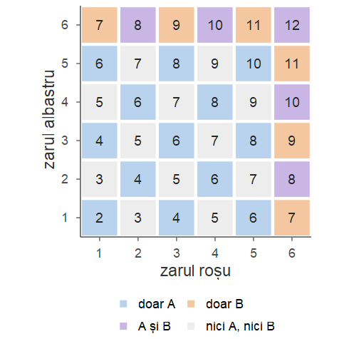
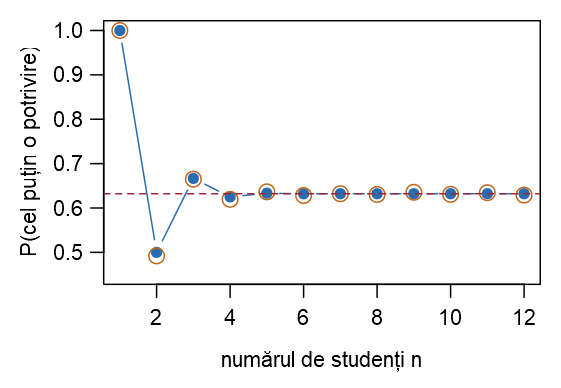

#> [1] 14
#> [1] 1024
#> [1] 3
#> [1] 2
#> [1] 3.844Seminarul 1. Evenimente, probabilități și numărare. Primii pași în R
Probabilități și Statistică · Seminarul 1 (seminar și laborator)
Alexandru Amărioarei
Universitatea din București · Facultatea de Matematică și Informatică · 2026–2027
Planul seminarului și laboratorului
Fiecare problemă este rezolvată întâi „cu creionul” (Seminar), apoi pe calculator (Laborator), prin enumerarea spațiului stărilor sau prin simulare.
| Tema | Conținut |
|---|---|
| Breviar | rezultatele din Cursul 1 folosite azi |
| Primii pași în R | vectori, vectori logici, expand.grid, sample, replicate, funcții proprii, grafice |
| Evenimente și operații cu evenimente | trei servere; două zaruri pe un spațiu enumerat |
| Reguli de calcul și formula lui Poincaré | Python și Java; numere divizibile cu 2, 3 sau 5; margini pentru probabilități |
| Modelul clasic și numărare | extrageri cu și fără revenire; parole și anagrame; cărți de joc; zile de naștere |
| Problema potrivirilor prin simulare | cel puțin o potrivire, exact \(k\) potriviri, numărul mediu de potriviri |
| Studiu individual și temă | exerciții suplimentare, rezolvate în notă; temă |
Obiectivele ședinței
La sfârșitul ședinței studentul trebuie să poată:
- exprima evenimente compuse („exact unul”, „cel puțin două”, „niciunul”) prin reuniuni, intersecții și complementare și aplica relațiile lui De Morgan;
- folosi regulile de calcul: evenimentul contrar, reuniunea a două evenimente, formula lui Poincaré pentru trei evenimente, marginile lui Boole și Bonferroni;
- calcula probabilități în modelul clasic prin numărare (regula produsului, extrageri cu și fără revenire, combinări, anagrame);
- lucra în R cu vectori, vectori logici și funcții, enumera un spațiu al stărilor cu
expand.gridși calcula probabilități cumean(conditie); - simula un experiment aleator cu
sampleșireplicateși compara frecvența relativă cu probabilitatea teoretică; - rezolva, exact și prin simulare, problema zilelor de naștere și problema potrivirilor.
Breviar: evenimente și reguli de calcul
Evenimente și reguli de calcul
Din Cursul 1 folosim astăzi următoarele rezultate.
Evenimente. Un eveniment este o submulțime \(A\subseteq\Omega\) a spațiului stărilor (Definiția 3 din Cursul 1). Dicționar: \(A^c\) = „nu se realizează \(A\)”; \(A\cup B\) = „\(A\) sau \(B\)” (cel puțin unul); \(A\cap B\) = „\(A\) și \(B\)”; \(A\setminus B=A\cap B^c\) = „\(A\), dar nu \(B\)”; \(A\,\triangle\,B\) = „exact unul dintre \(A\) și \(B\)”. \(A\) și \(B\) sunt incompatibile dacă \(A\cap B=\emptyset\) (Definiția 5 din Cursul 1).
Relațiile lui De Morgan (Propoziția 4 din Cursul 1): \((A\cup B)^c=A^c\cap B^c\) și \((A\cap B)^c=A^c\cup B^c\); la fel pentru oricâte evenimente.
Reguli de calcul (Propoziția 14 din Cursul 1): \(\PP(A^c)=1-\PP(A)\); dacă \(A\cap B=\emptyset\), atunci \(\PP(A\cup B)=\PP(A)+\PP(B)\); dacă \(A\subseteq B\), atunci \(\PP(A)\le\PP(B)\); \[ \PP(A\setminus B)=\PP(A)-\PP(A\cap B),\qquad \PP(A\cup B)=\PP(A)+\PP(B)-\PP(A\cap B). \]
Breviar: Poincaré, margini, modelul clasic
Formula lui Poincaré, margini, modelul clasic
Formula lui Poincaré (Teorema 15 din Cursul 1), pentru trei evenimente: \[ \begin{aligned} \PP(A\cup B\cup C)&=\PP(A)+\PP(B)+\PP(C)\\ &\quad-\PP(A\cap B)-\PP(A\cap C)-\PP(B\cap C)+\PP(A\cap B\cap C). \end{aligned} \] Margini (Propozițiile 16 din Cursul 1 și 17 din Cursul 1): \[ \PP\Big(\bigcup_{i=1}^nA_i\Big)\le\sum_{i=1}^n\PP(A_i),\qquad \PP\Big(\bigcap_{i=1}^nA_i\Big)\ge\sum_{i=1}^n\PP(A_i)-(n-1). \] Modelul clasic (Definiția 19 din Cursul 1): dacă \(\Omega\) este finit și rezultatele sunt egal probabile, atunci \(\PP(A)=|A|/|\Omega|\) (cazuri favorabile supra cazuri posibile).
Interpretarea frecvenționistă (Secțiunea 4 din Cursul 1): dacă în \(N\) repetări ale experimentului \(A\) se realizează de \(N(A)\) ori, atunci \(N(A)/N\approx\PP(A)\) pentru \(N\) mare. Pe această idee se bazează orice simulare.
Breviar: numărare și instrumentele R
Numărare, două probleme clasice, instrumente R
Numărare. Regula produsului (Propoziția 21 din Cursul 1); extrageri de \(k\) elemente din \(n\):
- cu revenire și cu ordine: \(n^k\) (Propoziția 22 din Cursul 1);
- fără revenire și cu ordine: \(A_n^k=n(n-1)\cdots(n-k+1)\), în particular \(n!\) permutări (Propoziția 23 din Cursul 1);
- fără revenire și fără ordine: \(\binom nk=\frac{n!}{k!\,(n-k)!}\) (Propoziția 24 din Cursul 1);
- șiruri cu \(n_1,\dots,n_k\) elemente identice: \(\frac{n!}{n_1!\cdots n_k!}\) (Propoziția 25 din Cursul 1).
Zile de naștere (Exemplul 16 din Cursul 1): \(\PP(\text{cel puțin o coincidență})=1-\frac{365\cdot364\cdots(365-n+1)}{365^n}\). Potriviri (Exemplul 22 din Cursul 1): \(p_n=\sum_{k=1}^n\frac{(-1)^{k+1}}{k!}\to1-\frac1e\approx0.632\).
Instrumente R: vectori logici și mean(conditie); expand.grid (enumerare); sample, replicate (simulare); funcții proprii; plot, barplot.
Primii pași în R
R și RStudio: consola și scriptul
R este un limbaj de programare și un mediu de lucru gratuit, dedicat calculului statistic și graficii. Îl folosim în fiecare săptămână ca să calculăm exact (formule, enumerarea tuturor rezultatelor) și ca să simulăm (repetăm experimentul de multe ori și numărăm).
- Lucrăm în RStudio: editorul de scripturi (stânga sus), consola (stânga jos), lista obiectelor (Environment, dreapta sus), fișiere, grafice și ajutor (dreapta jos).
- În consolă scriem o comandă după
>și apăsămEnter: potrivită pentru încercări rapide. - Într-un script (fișier
.R; File → New File → R Script) păstrăm comenzile; linia curentă sau selecția se trimite în consolă cuCtrl + Enter(Cmd + Enterpe macOS). Lucrați întotdeauna într-un script. - Tot ce urmează după
#este un comentariu; pagina de ajutor a unei funcții:?nume, de exemplu?sample. - Rezultatele afișate de R sunt precedate, pe slide-uri și în note, de
#>.
R ca un calculator. Obiecte
[1]din fața unui rezultat arată poziția primei valori afișate pe linie.- Un rezultat se păstrează într-un obiect cu operatorul
<-(în RStudio:Alt + -). O atribuire nu afișează nimic; pentru a vedea valoarea unui obiect îi scriem numele.nșiNsunt obiecte diferite.
Vectori
Obiectul de bază din R este vectorul: un șir de valori de același tip (numere, șiruri de caractere sau valori logice). Chiar și un număr este un vector de lungime \(1\).
#> [1] 1 2 3 4 5 6
#> [1] 0.00 0.25 0.50 0.75 1.00
#> [1] "H" "T" "H" "T" "H" "T"
#> [1] "R" "R" "A" "A" "A"Cu rep vom construi urne („\(6\) bile roșii și \(4\) albastre”), iar cu 1:n spații ale stărilor.
Vectori: operații și indexare
Operațiile se aplică element cu element (sunt vectorizate); indicii încep de la 1, nu de la 0.
#> [1] 5 9 16 17 24 43
#> [1] 0.03704 0.07407 0.13889 0.14815 0.21296 0.38889
#> [1] 8
#> [1] 4 15
#> [1] 8 15 16 23 42
#> [1] 16 23 42
#> [1] 6Vectori logici: numărare și proporții
O comparație (==, !=, <, <=, >, >=) produce un vector de valori TRUE/FALSE. În calcule TRUE valorează \(1\) și FALSE valorează \(0\): suma numără valorile TRUE, iar media este proporția lor.
#> [1] FALSE TRUE FALSE TRUE FALSE FALSE TRUE FALSE
#> [1] 3
#> [1] 0.375| Eveniment | \(A\cap B\) („și”) | \(A\cup B\) („sau”) | \(A^c\) („nu”) | \(A\setminus B\) | \(A\,\triangle\,B\) („exact unul”) |
|---|---|---|---|---|---|
| În R | A & B |
A | B |
!A |
A & !B |
xor(A, B) |
Evenimente ca vectori logici
Idiomul de bază al laboratorului
Dacă ev este vectorul logic al unui eveniment (câte o componentă pentru fiecare rezultat), atunci sum(ev) este numărul cazurilor favorabile, iar mean(ev) este proporția lor: probabilitatea, când componentele corespund tuturor rezultatelor egal probabile (enumerare), respectiv frecvența relativă, când corespund unor repetări simulate.
Funcții utile pentru numărare
Stânga: formulele de numărare din Cursul 1. Dreapta: table numără aparițiile fiecărei valori (util la simulări); which dă pozițiile valorilor TRUE; any / all: există un TRUE? / sunt toate TRUE?
Mulțimi
Un eveniment poate fi reprezentat și ca mulțimea rezultatelor favorabile; R are funcții pentru operațiile cu mulțimi.
#> [1] 2 4 6 5
#> [1] 4 6
#> [1] 2
#> [1] 1 3 5
#> [1] FALSE TRUEEnumerarea spațiului stărilor: expand.grid
Pentru experimente cu mai multe etape (două zaruri, trei monede), expand.grid construiește un tabel (data frame) în care fiecare linie este un rezultat posibil; o coloană se extrage cu $.
#> [1] 36
#> z1 z2
#> 1 1 1
#> 2 2 1
#> 3 3 1
#> [1] 0.1667Cel mai mare dintre două zaruri
Exemplul 1 (Cel mai mare dintre două zaruri)
Aruncăm două zaruri echilibrate; \(M\) = cel mai mare dintre cele două numere. \(\{M\le4\}\) înseamnă că ambele zaruri arată cel mult \(4\): \(4\cdot4=16\) cazuri favorabile, deci \(\PP(M\le4)=\frac{16}{36}\approx0.4444\). Apoi \(\{M=4\}=\{M\le4\}\setminus\{M\le3\}\), deci \(\PP(M=4)=\frac{16}{36}-\frac{9}{36}=\frac7{36}\approx0.1944\). În R numărăm pe tabelul celor \(36\) de rezultate.
#> cel_mult_4 egal_cu_4
#> 0.4444 0.1944
#> M
#> 1 2 3 4 5 6
#> 1 3 5 7 9 11Valorile coincid cu cele calculate de mână; \(M=m\) are \(m^2-(m-1)^2=2m-1\) cazuri favorabile: \(1,3,5,7,9,11\).
Experimente aleatoare: sample și set.seed
set.seed(2026) # fixează „sămânța” generatorului
sample(1:6, 1) # o aruncare a unui zar
sample(1:6, 10, replace = TRUE) # 10 aruncări (extrageri cu revenire)
sample(1:10, 3) # 3 bile din 10, fără revenire
sample(5) # o permutare aleatoare a lui 1, ..., 5
sample(c("H", "T"), 8, replace = TRUE, prob = c(0.8, 0.2))#> [1] 5
#> [1] 1 1 6 5 3 4 4 5 4 2
#> [1] 2 8 3
#> [1] 5 2 1 4 3
#> [1] "H" "H" "H" "H" "H" "H" "H" "T"sample(x, size)este „urna” noastră: implicit fără revenire; cureplace = TRUE, cu revenire.sample(n)este o permutare aleatoare a lui1:n;probdă probabilitățile elementelor.- Numerele sunt pseudo-aleatoare:
set.seed(numar)fixează generatorul (rezultate reproductibile).
Un zar aruncat de zece mii de ori
Exemplul 2 (Un zar aruncat de zece mii de ori)
Simulăm \(10^4\) aruncări ale unui zar echilibrat și calculăm frecvențele relative ale celor șase fețe și a evenimentului „număr par”.
#> aruncari
#> 1 2 3 4 5 6
#> 0.161 0.174 0.159 0.170 0.170 0.166
#> [1] 0.5108Frecvențele sunt apropiate de \(1/6\approx0.167\), respectiv de \(1/2\): este interpretarea frecvenționistă a probabilității.
Repetarea unui experiment: for și replicate
Un experiment mai complicat se repetă cu o buclă for sau, mai scurt, cu replicate. Estimăm probabilitatea ca suma a două zaruri să fie \(7\) (valoarea exactă: \(6/36\approx0.1667\)).
#> [1] 0.1654
#> [1] 0.1656replicate(B, expresie) evaluează expresia de B ori și adună rezultatele într-un vector.
Funcții proprii
suma_zaruri <- function(k = 2) { # k = numărul de zaruri (implicit 2)
z <- sample(1:6, k, replace = TRUE)
sum(z) # ultima expresie este valoarea întoarsă
}
suma_zaruri() # suma a două zaruri
suma_zaruri(5) # suma a cinci zaruri
mean(replicate(B, suma_zaruri(3)) >= 12)
sapply(1:3, function(k) mean(replicate(B, suma_zaruri(k)) >= 4 * k))#> [1] 8
#> [1] 22
#> [1] 0.3797
#> [1] 0.4976 0.4230 0.3777Un experiment folosit de mai multe ori se împachetează într-o funcție. A treia linie de rezultate estimează \(\PP(\text{suma a trei zaruri}\ge12)=81/216=0.375\). sapply(valori, f) aplică funcția f fiecărui element: ultima linie estimează \(\PP(\text{suma a }k\text{ zaruri}\ge4k)\), \(k=1,2,3\) (exact: \(0.5\), \(15/36\approx0.4167\), \(0.375\); erori sub \(0.01\)).
Schema unei simulări
Schema unei simulări
- Scriem o funcție (sau o expresie) care efectuează o dată experimentul și întoarce mărimea care ne interesează (un număr sau
TRUE/FALSE). - Repetăm experimentul de
Bori:rezultate <- replicate(B, experiment()). - Estimăm probabilitatea prin frecvența relativă:
mean(conditie).
Estimarea nu este exactă: pentru B = 1e4 eroarea este, de regulă, mai mică decât \(0.01\), iar pentru B = 1e5 mai mică decât \(0.003\) (vom vedea de ce în Cursul 7). De aceea comparăm doar primele două zecimale ale unei simulări cu valoarea teoretică.
Grafice simple
plot(x, y) reprezintă punctele (x[i], y[i]), barplot desenează bare; peste un grafic adăugăm lines, points, abline. Culorile notelor sunt păstrate într-un vector cu nume (un element se extrage cu [[ ]]).
culori <- c(albastru = "#2B6CB0", rosu = "#9B2335", verde = "#2F7D4A",
portocaliu = "#C0661A", mov = "#7A3E8E", teal = "#1F7A7A",
gri = "#6B7785", bleumarin = "#1B3A5C")
barplot(frecv, col = culori[["albastru"]],
xlab = "fața zarului", ylab = "frecvența relativă")
abline(h = 1/6, lty = 2, col = culori[["rosu"]]) # dreapta y = 1/6
Stabilizarea frecvenței relative
Exemplul 3 (Stabilizarea frecvenței relative)
Aruncăm o monedă echilibrată de \(N=5000\) de ori și urmărim frecvența relativă a capului după primele \(1,2,\dots,N\) aruncări. Dacă moneda este vectorul rezultatelor (\(1\) = cap, \(0\) = pajură), cumsum(moneda) este numărul de capete obținute până la fiecare aruncare, iar împărțirea la 1:N dă frecvențele relative.
#> [1] 0.700 0.510 0.494 0.504La început frecvența relativă oscilează mult, apoi se apropie de \(0.5\).
Stabilizarea frecvenței relative — graficul
plot(1:N, f, type = "l", log = "x", ylim = c(0, 1),
col = culori[["albastru"]],
xlab = "numărul de aruncări (scară logaritmică)",
ylab = "frecvența relativă a capului")
moneda2 <- sample(c(1, 0), N, replace = TRUE) # o a doua serie
lines(1:N, cumsum(moneda2) / (1:N), col = culori[["verde"]])
abline(h = 0.5, lty = 2, col = culori[["rosu"]])
Ambele serii se stabilizează în jurul valorii \(0.5\), ca în figura corespunzătoare din Secțiunea 4 din Cursul 1.
Evenimente și operații cu evenimente
Trei servere
Exercițiul 1 (Trei servere)
Un serviciu web rulează pe trei servere; la un moment dat, fiecare server fie funcționează, fie este căzut. Notăm cu \(A_i\) evenimentul „serverul \(i\) funcționează”, \(i=1,2,3\).
- Exprimați cu ajutorul evenimentelor \(A_1,A_2,A_3\): \(E_1\) = „toate cele trei servere funcționează”; \(E_2\) = „cel puțin un server funcționează”; \(E_3\) = „niciun server nu funcționează”; \(E_4\) = „funcționează exact un server”; \(E_5\) = „funcționează cel puțin două servere”; \(E_6\) = „funcționează cel mult un server”.
- Care dintre evenimentele de la (a) sunt contrare unul altuia? Justificați cu relațiile lui De Morgan.
- Serviciul este disponibil dacă funcționează serverul \(1\) (de aplicație) și cel puțin unul dintre serverele \(2\) și \(3\) (de date). Scrieți evenimentul \(S\) = „serviciul este disponibil” și contrarul \(S^c\).
- Descriem starea sistemului prin \((x_1,x_2,x_3)\), cu \(x_i=1\) dacă serverul \(i\) funcționează și \(x_i=0\) dacă este căzut. Presupunând că stările sunt egal probabile, calculați probabilitățile evenimentelor \(E_1,\dots,E_6\) și \(S\).
- Construiți în R spațiul stărilor și evenimentele; verificați răspunsurile de la (b), (c) și (d).
Trei servere — rezolvare (a)
Soluție
Seminar Traducem cuvânt cu cuvânt: „și” = intersecție, „sau” (cel puțin unul) = reuniune, „nu” = complementară. \[ E_1=A_1\cap A_2\cap A_3,\qquad E_2=A_1\cup A_2\cup A_3,\qquad E_3=A_1^c\cap A_2^c\cap A_3^c . \] „Exact unul”: un server funcționează, iar celelalte două nu; trei situații, incompatibile două câte două: \[ E_4=(A_1\cap A_2^c\cap A_3^c)\cup(A_1^c\cap A_2\cap A_3^c)\cup(A_1^c\cap A_2^c\cap A_3). \] „Cel puțin două”: există o pereche de servere care funcționează amândouă: \[ E_5=(A_1\cap A_2)\cup(A_1\cap A_3)\cup(A_2\cap A_3). \] Aici evenimentele din reuniune nu sunt incompatibile: starea în care funcționează toate serverele aparține tuturor celor trei. „Cel mult unul” înseamnă „niciunul sau exact unul”: \(E_6=E_3\cup E_4\).
Trei servere — rezolvare (b), (c)
Soluție (continuare)
Seminar (b) Din relațiile lui De Morgan (Propoziția 4 din Cursul 1), \(E_2^c=(A_1\cup A_2\cup A_3)^c=A_1^c\cap A_2^c\cap A_3^c=E_3\): negația lui „cel puțin unul funcționează” este „niciunul nu funcționează”. Tot contrare sunt \(E_5\) și \(E_6\) (negația lui „cel puțin două” este „cel mult unul”); prin calcul, \[ \begin{aligned} E_5^c&=(A_1\cap A_2)^c\cap(A_1\cap A_3)^c\cap(A_2\cap A_3)^c\\ &=(A_1^c\cup A_2^c)\cap(A_1^c\cup A_3^c)\cap(A_2^c\cup A_3^c), \end{aligned} \] adică „din orice pereche de servere, cel puțin unul este căzut”: funcționează cel mult un server, deci \(E_5^c=E_6\).
(c) „Serverul \(1\) și cel puțin unul dintre \(2\) și \(3\)”: \(S=A_1\cap(A_2\cup A_3)\). Aplicând de două ori relațiile lui De Morgan, \(S^c=A_1^c\cup(A_2\cup A_3)^c=A_1^c\cup(A_2^c\cap A_3^c)\): serviciul este indisponibil dacă serverul de aplicație este căzut sau dacă ambele servere de date sunt căzute.
Trei servere — rezolvare (d)
Soluție (continuare)
Seminar (d) Modelul. \(\Omega=\{0,1\}^3\), cu \(|\Omega|=2\cdot2\cdot2=8\) (regula produsului, Propoziția 21 din Cursul 1). Stările fiind egal probabile, \(\PP(E)=|E|/8\) (modelul clasic, Definiția 19 din Cursul 1); \(A_i\) este mulțimea stărilor cu \(x_i=1\). \[ \begin{aligned} E_1&=\{(1,1,1)\},\quad E_3=\{(0,0,0)\}, & \PP(E_1)&=\PP(E_3)=\tfrac18=0.125;\\ E_2&=E_3^c, & \PP(E_2)&=1-\tfrac18=\tfrac78=0.875;\\ E_4&=\{(1,0,0),(0,1,0),(0,0,1)\}, & \PP(E_4)&=\tfrac38=0.375;\\ E_5&=\{(1,1,0),(1,0,1),(0,1,1),(1,1,1)\}, & \PP(E_5)&=\tfrac48=0.5;\\ E_6&=E_5^c, & \PP(E_6)&=1-\tfrac48=0.5;\\ S&=\{(1,1,0),(1,0,1),(1,1,1)\}, & \PP(S)&=\tfrac38=0.375 . \end{aligned} \] Pentru \(E_2\) și \(E_6\): regula evenimentului contrar (Propoziția 14 din Cursul 1), mai ușor de aplicat decât numărarea directă.
Trei servere — în R
Soluție
Laborator Cele \(8\) stări se obțin cu expand.grid; fiecare eveniment devine un vector logic cu \(8\) componente, câte una pentru fiecare stare.
stari <- expand.grid(x1 = 0:1, x2 = 0:1, x3 = 0:1)
A1 <- stari$x1 == 1 # funcționează serverul 1
A2 <- stari$x2 == 1
A3 <- stari$x3 == 1
E1 <- A1 & A2 & A3
E2 <- A1 | A2 | A3
E3 <- !A1 & !A2 & !A3
E4 <- (A1 & !A2 & !A3) | (!A1 & A2 & !A3) |
(!A1 & !A2 & A3)
E5 <- (A1 & A2) | (A1 & A3) | (A2 & A3)
E6 <- E3 | E4
S <- A1 & (A2 | A3)#> x1 x2 x3 E4 E5 E6 S
#> 1 0 0 0 FALSE FALSE TRUE FALSE
#> 2 1 0 0 TRUE FALSE TRUE FALSE
#> 3 0 1 0 TRUE FALSE TRUE FALSE
#> 4 1 1 0 FALSE TRUE FALSE TRUE
#> 5 0 0 1 TRUE FALSE TRUE FALSE
#> 6 1 0 1 FALSE TRUE FALSE TRUE
#> 7 0 1 1 FALSE TRUE FALSE FALSE
#> 8 1 1 1 FALSE TRUE FALSE TRUETrei servere — în R: verificări
Soluție (continuare)
Laborator Probabilitățile sunt proporțiile valorilor TRUE; egalitățile se verifică, stare cu stare, cu all.
c(E1 = mean(E1), E2 = mean(E2), E3 = mean(E3), E4 = mean(E4),
E5 = mean(E5), E6 = mean(E6), S = mean(S))
c(all(E3 == !E2), all(E6 == !E5), # perechile de evenimente contrare
all(!S == (!A1 | (!A2 & !A3)))) # formula pentru contrarul lui S
nr <- stari$x1 + stari$x2 + stari$x3 # numărul de servere funcționale
c(all(E4 == (nr == 1)), all(E5 == (nr >= 2)))#> E1 E2 E3 E4 E5 E6 S
#> 0.125 0.875 0.125 0.375 0.500 0.500 0.375
#> [1] TRUE TRUE TRUE
#> [1] TRUE TRUERegăsim valorile de la (d); relațiile de la (b) și (c) sunt confirmate; nr dă o cale mai scurtă spre \(E_4\) și \(E_5\).
Două zaruri pe un spațiu enumerat
Exercițiul 2 (Două zaruri pe un spațiu enumerat)
Aruncăm două zaruri echilibrate, unul roșu și unul albastru. Considerăm evenimentele \(A\) = „suma celor două numere este pară” și \(B\) = „cel puțin un zar arată \(6\)”.
- Descrieți spațiul stărilor și determinați numărul de elemente ale evenimentelor \(A\), \(B\) și \(A\cap B\).
- Calculați \(\PP(A)\), \(\PP(B)\), \(\PP(A\cap B)\) și \(\PP(A\cup B)\).
- Descrieți în cuvinte evenimentele \(A^c\cap B^c\), \(A\setminus B\) și \(A\,\triangle\,B\) și calculați-le probabilitățile.
- Sunt \(A\) și \(B\) incompatibile? Arătați că evenimentul \(C\) = „suma este cel mult \(6\)” este incompatibil cu \(B\) și calculați \(\PP(B\cup C)\).
- Verificați rezultatele în R, prin enumerare și printr-o simulare cu \(10^5\) aruncări.
Două zaruri — rezolvare (a)
Soluție
Seminar Modelul. Un rezultat este o pereche \((x,y)\): \(x\) este numărul de pe zarul roșu, \(y\) cel de pe zarul albastru. Deci \(\Omega=\{1,\dots,6\}^2\), \(|\Omega|=6\cdot6=36\); rezultatele sunt egal probabile și \(\PP(E)=|E|/36\) (Definiția 19 din Cursul 1).
Evenimentul \(A\). Suma \(x+y\) este pară dacă \(x\) și \(y\) sunt ambele pare sau ambele impare. Sunt \(3\) numere pare și \(3\) impare pe un zar, deci \(|A|=3\cdot3+3\cdot3=18\).
Evenimentul \(B\). Numărăm contrarul: \(B^c\) = „niciun zar nu arată \(6\)” înseamnă \(x,y\in\{1,\dots,5\}\), deci \(|B^c|=5\cdot5=25\) și \(|B|=36-25=11\).
Evenimentul \(A\cap B\). Dacă un zar arată \(6\) (număr par), suma este pară exact când și celălalt zar este par: \(A\cap B=\{(6,2),(6,4),(6,6),(2,6),(4,6)\}\), deci \(|A\cap B|=5\).
Două zaruri — rezolvare (b), (c)
Soluție (continuare)
Seminar (b) Din numărătoarea de la (a), \(\PP(A)=\frac{18}{36}=\frac12\), \(\PP(B)=\frac{11}{36}\approx0.3056\) și \(\PP(A\cap B)=\frac5{36}\approx0.1389\). Din formula reuniunii (Propoziția 14 din Cursul 1), \[ \PP(A\cup B)=\PP(A)+\PP(B)-\PP(A\cap B)=\frac{18+11-5}{36}=\frac{24}{36}=\frac23\approx0.6667 . \] (c) \(A^c\cap B^c\) = „suma este impară și niciun zar nu arată \(6\)” \(=(A\cup B)^c\) (De Morgan), deci \(\PP(A^c\cap B^c)=1-\frac23=\frac13\approx0.3333\).
\(A\setminus B\) = „suma este pară și niciun zar nu arată \(6\)”: \(\PP(A\setminus B)=\PP(A)-\PP(A\cap B)=\frac{18-5}{36}=\frac{13}{36}\approx0.3611\); la fel, \(\PP(B\setminus A)=\frac{11-5}{36}=\frac6{36}\).
\(A\,\triangle\,B\) = „se realizează exact unul dintre \(A\) și \(B\)” este reuniunea disjunctă \((A\setminus B)\cup(B\setminus A)\), deci \(\PP(A\,\triangle\,B)=\frac{13}{36}+\frac6{36}=\frac{19}{36}\approx0.5278\).
Două zaruri — rezolvare (d). Cele patru regiuni
Soluție (continuare)
Seminar (d) \(A\) și \(B\) nu sunt incompatibile: \(A\cap B\ne\emptyset\) (de exemplu, \((6,6)\in A\cap B\)). În schimb, dacă un zar arată \(6\), suma este cel puțin \(6+1=7\), deci nu poate fi cel mult \(6\): \(B\cap C=\emptyset\).
Numărăm \(C\) după valoarea lui \(x\): pentru \(x=1\) avem \(y\in\{1,\dots,5\}\) (\(5\) cazuri), pentru \(x=2\) avem \(4\) cazuri ș.a.m.d., deci \(|C|=5+4+3+2+1=15\). Pentru evenimente incompatibile probabilitățile se adună: \[ \PP(B\cup C)=\frac{11}{36}+\frac{15}{36}=\frac{26}{36}\approx0.7222 . \]

Două zaruri — în R: enumerare
Soluție
Laborator Enumerare: sum numără cazurile favorabile, mean dă probabilitatea; regăsim \(18\), \(11\), \(5\), \(24\) și, în două moduri, \(0.6667\).
zaruri <- expand.grid(z1 = 1:6, z2 = 1:6) # cele 36 de rezultate
A <- (zaruri$z1 + zaruri$z2) %% 2 == 0 # suma este pară
B <- zaruri$z1 == 6 | zaruri$z2 == 6 # cel puțin un 6
c(A = sum(A), B = sum(B), A_si_B = sum(A & B), A_sau_B = sum(A | B))
c(P_A = mean(A), P_B = mean(B), P_A_si_B = mean(A & B), P_A_sau_B = mean(A | B))
mean(A) + mean(B) - mean(A & B) # formula reuniunii#> A B A_si_B A_sau_B
#> 18 11 5 24
#> P_A P_B P_A_si_B P_A_sau_B
#> 0.5000 0.3056 0.1389 0.6667
#> [1] 0.6667Două zaruri — în R: De Morgan, (c) și (d)
Soluție (continuare)
Laborator Verificăm relația lui De Morgan și punctele (c) și (d): obținem \(1/3\), \(13/36\approx0.3611\) și \(19/36\approx0.5278\); \(B\) și \(C\) nu au niciun rezultat comun, iar \(\PP(B\cup C)=\PP(B)+\PP(C)=0.7222\).
#> [1] TRUE
#> niciunul A_fara_B exact_unul
#> 0.3333 0.3611 0.5278
#> B_si_C P_B_sau_C suma_prob
#> 0.0000 0.7222 0.7222Două zaruri — în R: simulare
Soluție (continuare)
Laborator Simulăm experimentul: \(10^5\) aruncări ale fiecărui zar și frecvențele relative ale evenimentelor.
#> A_sau_B exact_unul
#> 0.6678 0.5305Frecvențele relative sunt apropiate de \(2/3\approx0.6667\) și \(19/36\approx0.5278\) (diferențe sub \(0.003\)). Codul este cel al enumerării: s-au schimbat doar liniile tabelului, din „toate rezultatele posibile” în „rezultatele obținute”.
Reguli de calcul și formula lui Poincaré
Python și Java
Exercițiul 3 (Python și Java)
Alegem la întâmplare un student al unei facultăți. Probabilitatea ca studentul să știe Python este \(0.70\), probabilitatea să știe Java este \(0.45\), iar probabilitatea să știe ambele limbaje este \(0.30\).
- Care este probabilitatea ca studentul să știe cel puțin unul dintre cele două limbaje?
- Care este probabilitatea să nu știe niciunul?
- Care este probabilitatea să știe Python, dar nu și Java?
- Care este probabilitatea să știe exact unul dintre cele două limbaje?
- Să presupunem că nu am cunoaște probabilitatea de a ști ambele limbaje. Între ce valori s-ar putea afla ea, dacă știm doar că \(70\%\) dintre studenți știu Python și \(45\%\) știu Java?
- În R: construiți o facultate cu \(200\) de studenți care respectă datele din enunț și verificați, prin numărare și prin simulare, răspunsurile de la (a)–(d).
Python și Java — rezolvare (a)–(d)
Soluție
Seminar Modelul. \(A\) = „studentul știe Python”, \(B\) = „studentul știe Java”; \(\PP(A)=0.70\), \(\PP(B)=0.45\), \(\PP(A\cap B)=0.30\).
(a) „Cel puțin unul dintre limbaje” este \(A\cup B\) (adunând \(0.70\) și \(0.45\) numărăm de două ori studenții care știu ambele limbaje): \[ \PP(A\cup B)=\PP(A)+\PP(B)-\PP(A\cap B)=0.70+0.45-0.30=0.85 . \] (b) „Niciunul” este \(A^c\cap B^c=(A\cup B)^c\) (De Morgan), deci \(\PP(A^c\cap B^c)=1-\PP(A\cup B)=0.15\).
(c) „Python, dar nu Java” este \(A\setminus B=A\cap B^c\): \(\PP(A\setminus B)=\PP(A)-\PP(A\cap B)=0.70-0.30=0.40\).
(d) „Exact unul” este \(A\,\triangle\,B=(A\setminus B)\cup(B\setminus A)\), reuniune de evenimente incompatibile; \(\PP(B\setminus A)=0.45-0.30=0.15\), deci \(\PP(A\,\triangle\,B)=0.40+0.15=0.55\). În general, \(\PP(A\,\triangle\,B)=\PP(A)+\PP(B)-2\,\PP(A\cap B)\).
Verificare: „doar Python”, „ambele”, „doar Java”, „niciunul” formează un sistem complet de evenimente: \(0.40+0.30+0.15+0.15=1\).
Python și Java — rezolvare (e)
Soluție (continuare)
Seminar (e) Notăm \(x=\PP(A\cap B)\). Pe de o parte, \(A\cap B\subseteq A\) și \(A\cap B\subseteq B\), deci, din monotonie, \(x\le\min\{0.70,\,0.45\}=0.45\). Pe de altă parte, \(\PP(A\cup B)=0.70+0.45-x\le1\), deci \(x\ge0.15\): este inegalitatea lui Bonferroni (Propoziția 16 din Cursul 1), \(\PP(A\cap B)\ge\PP(A)+\PP(B)-1\). Așadar \[ 0.15\le\PP(A\cap B)\le0.45 . \] Valoarea din enunț, \(0.30\), se află în acest interval. Capetele au o interpretare simplă: \(x=0.45\) înseamnă \(B\subseteq A\) (toți cei care știu Java știu și Python), iar \(x=0.15\) înseamnă \(\PP(A\cup B)=1\) (fiecare student știe cel puțin un limbaj).
Python și Java — în R: o populație de 200 de studenți
Soluție
Laborator Construim o populație cu aceleași proporții: \(60\) de studenți știu ambele limbaje, \(80\) doar Python, \(30\) doar Java și \(30\) niciunul. Regăsim datele din enunț și valorile \(0.85\), \(0.15\), \(0.40\), \(0.55\) de la (a)–(d).
grupe <- c(60, 80, 30, 30) # ambele, doar Python, doar Java, niciunul
python <- rep(c(TRUE, TRUE, FALSE, FALSE), times = grupe)
java <- rep(c(TRUE, FALSE, TRUE, FALSE), times = grupe)
c(P_A = mean(python), P_B = mean(java), P_A_si_B = mean(python & java))
c(cel_putin_unul = mean(python | java), niciunul = mean(!python & !java),
doar_python = mean(python & !java), exact_unul = mean(xor(python, java)))#> P_A P_B P_A_si_B
#> 0.70 0.45 0.30
#> cel_putin_unul niciunul doar_python exact_unul
#> 0.85 0.15 0.40 0.55Python și Java — în R: simulare
Soluție (continuare)
Laborator table: „diagrama Venn în cifre”. Alegem un student de \(10^5\) ori: frecvențe apropiate de \(0.85\) și \(0.55\).
#> java
#> python FALSE TRUE
#> FALSE 30 30
#> TRUE 80 60
#> cel_putin_unul exact_unul
#> 0.8496 0.5488Numere divizibile cu 2, 3 sau 5
Exercițiul 4 (Numere divizibile cu 2, 3 sau 5)
Alegem la întâmplare un număr din mulțimea \(\{1,2,\dots,1000\}\), toate numerele fiind egal probabile. Notăm cu \(D_k\) evenimentul „numărul ales este divizibil cu \(k\)”.
- Calculați \(\PP(D_2)\), \(\PP(D_3)\), \(\PP(D_5)\) și probabilitățile intersecțiilor \(D_2\cap D_3\), \(D_2\cap D_5\), \(D_3\cap D_5\) și \(D_2\cap D_3\cap D_5\).
- Care este probabilitatea ca numărul ales să fie divizibil cu cel puțin unul dintre numerele \(2\), \(3\) și \(5\)?
- Care este probabilitatea ca numărul să nu fie divizibil cu niciunul dintre ele?
- Care este probabilitatea ca numărul să fie divizibil cu exact unul dintre numerele \(2\), \(3\) și \(5\)?
- Verificați în R, folosind operatorul
%%pe vectorul1:1000. Cum se schimbă răspunsul de la (b) dacă alegem numărul din \(\{1,\dots,N\}\), pentru \(N=10\), \(100\), \(1000\) și \(10^6\)?
Divizibilitate — rezolvare (a)
Soluție
Seminar Modelul. \(\Omega=\{1,\dots,1000\}\), \(|\Omega|=1000\), cu echirepartiția: \(\PP(E)=|E|/1000\).
(a) Multiplii lui \(k\) din \(\Omega\) sunt \(k,2k,3k,\dots\), până la cel mai mare multiplu care nu depășește \(1000\); numărul lor este câtul împărțirii întregi a lui \(1000\) la \(k\), notat \(\lfloor1000/k\rfloor\). Deci \[ |D_2|=\Big\lfloor\frac{1000}{2}\Big\rfloor=500,\qquad |D_3|=\Big\lfloor\frac{1000}{3}\Big\rfloor=333,\qquad |D_5|=\Big\lfloor\frac{1000}{5}\Big\rfloor=200 . \] Un număr este divizibil și cu \(2\), și cu \(3\) exact atunci când este divizibil cu \(6\) (deoarece \(2\) și \(3\) sunt prime între ele), deci \(D_2\cap D_3=D_6\). La fel, \(D_2\cap D_5=D_{10}\), \(D_3\cap D_5=D_{15}\) și \(D_2\cap D_3\cap D_5=D_{30}\): \[ |D_6|=166,\qquad |D_{10}|=100,\qquad |D_{15}|=66,\qquad |D_{30}|=33 . \] Probabilitățile sunt aceste numere împărțite la \(1000\): \(0.5\), \(0.333\), \(0.2\), respectiv \(0.166\), \(0.1\), \(0.066\) și \(0.033\).
Divizibilitate — rezolvare (b), (c)
Soluție (continuare)
Seminar (b) Evenimentul este \(D_2\cup D_3\cup D_5\). Din formula lui Poincaré pentru trei evenimente (Teorema 15 din Cursul 1), \[ \begin{aligned} \PP(D_2\cup D_3\cup D_5)&=\PP(D_2)+\PP(D_3)+\PP(D_5)\\ &\quad-\PP(D_6)-\PP(D_{10})-\PP(D_{15})+\PP(D_{30})\\ &=\frac{(500+333+200)-(166+100+66)+33}{1000}=\frac{734}{1000}=0.734 . \end{aligned} \] (c) „Niciunul” este \(D_2^c\cap D_3^c\cap D_5^c=(D_2\cup D_3\cup D_5)^c\) (De Morgan), cu probabilitatea \(1-0.734=0.266\). Sunt deci \(266\) de numere între \(1\) și \(1000\) prime cu \(30\).
Divizibilitate — rezolvare (d)
Soluție (continuare)
Seminar (d) „Exact unul” este reuniunea a trei evenimente incompatibile: „doar cu \(2\)”, „doar cu \(3\)”, „doar cu \(5\)”. Numerele divizibile doar cu \(2\) sunt cele din \(D_2\) care nu sunt în \(D_3\cup D_5\); cele pe care le eliminăm formează \(D_2\cap(D_3\cup D_5)=D_6\cup D_{10}\), cu \(|D_6\cup D_{10}|=|D_6|+|D_{10}|-|D_{30}|\). Prin urmare \[ \begin{aligned} |\text{doar cu }2|&=500-(166+100-33)=267,\\ |\text{doar cu }3|&=333-(166+66-33)=134,\\ |\text{doar cu }5|&=200-(100+66-33)=67, \end{aligned} \] iar probabilitatea căutată este \((267+134+67)/1000=0.468\).
Divizibilitate — în R
Soluție
Laborator x %% k == 0 este vectorul logic al lui \(D_k\); regăsim cardinalele de la (a) și, în două moduri, \(0.734\).
x <- 1:1000
D2 <- x %% 2 == 0; D3 <- x %% 3 == 0; D5 <- x %% 5 == 0
c(D2 = sum(D2), D3 = sum(D3), D5 = sum(D5), D6 = sum(D2 & D3),
D10 = sum(D2 & D5), D15 = sum(D3 & D5), D30 = sum(D2 & D3 & D5))
c(numarare = mean(D2 | D3 | D5), # punctul (b), direct
poincare = mean(D2) + mean(D3) + mean(D5) - mean(D2 & D3) -
mean(D2 & D5) - mean(D3 & D5) + mean(D2 & D3 & D5))#> D2 D3 D5 D6 D10 D15 D30
#> 500 333 200 166 100 66 33
#> numarare poincare
#> 0.734 0.734Divizibilitate — în R: (c), (d) și dependența de \(N\)
Soluție (continuare)
Laborator D2 + D3 + D5 numără câte dintre cele trei evenimente se realizează: \(266\) de numere nu sunt divizibile cu niciunul (c), \(468\) cu exact unul (d), \(233\) cu două și \(33\) cu toate trei.
Probabilitatea de la (b) depinde de \(N\), dar se apropie de \(11/15\approx0.7333\): într-un bloc de \(30\) de numere consecutive, exact \(22\) sunt divizibile cu \(2\), \(3\) sau \(5\) (Exemplul 13 din Cursul 1).
#>
#> 0 1 2 3
#> 266 468 233 33
#> [1] 0.8000 0.7400 0.7340 0.7333
#> [1] 0.7333Teste automate: margini pentru probabilități
Exercițiul 5 (Teste automate: margini pentru probabilități)
O aplicație este livrată numai dacă trece toate cele \(n=5\) teste automate. Din istoricul proiectului se știe că fiecare test, luat separat, este trecut cu probabilitatea \(0.98\); nu se știe însă nimic despre legătura dintre teste. Fie \(T_i\) evenimentul „testul \(i\) este trecut”, \(i=1,\dots,5\).
- Scrieți evenimentul \(L\) = „aplicația este livrată” și contrarul său cu ajutorul evenimentelor \(T_i\).
- Arătați că \(0.90\le\PP(L)\le0.98\).
- Cel mult câte teste de acest fel poate avea aplicația, astfel încât să putem garanta că este livrată cu probabilitate cel puțin \(1/2\)?
- Construiți în R, pe spațiul \(\Omega=\{1,2,\dots,100\}\) cu rezultate egal probabile, două situații în care marginile de la (b) sunt atinse. Estimați apoi \(\PP(L)\) prin simulare în cazul în care testele „nu se influențează” unul pe altul.
Teste automate — rezolvare (a), (b)
Soluție
Seminar (a) Aplicația este livrată dacă trece testul \(1\) și … și testul \(5\); din relația lui De Morgan, nu este livrată dacă pică cel puțin un test: \[ L=T_1\cap T_2\cap\dots\cap T_5,\qquad L^c=T_1^c\cup T_2^c\cup\dots\cup T_5^c . \] (b) Marginea inferioară. Fiecare test pică cu probabilitatea \(\PP(T_i^c)=1-0.98=0.02\). Din inegalitatea lui Boole (Propoziția 17 din Cursul 1), aplicată evenimentelor \(T_1^c,\dots,T_5^c\), \[ \PP(L^c)=\PP\Big(\bigcup_{i=1}^5T_i^c\Big)\le\sum_{i=1}^5\PP(T_i^c)=5\cdot0.02=0.10, \] deci \(\PP(L)=1-\PP(L^c)\ge0.90\): este a doua inegalitate a lui Bonferroni (Propoziția 16 din Cursul 1).
Marginea superioară. \(L\subseteq T_1\) (dacă trec toate testele, trece și primul), deci, din monotonie, \(\PP(L)\le\PP(T_1)=0.98\).
Teste automate — rezolvare (c), (d)
Soluție (continuare)
Seminar (c) Pentru \(n\) teste, același raționament dă \(\PP(L)\ge1-0.02\,n\). Garanția \(\PP(L)\ge1/2\) este asigurată dacă \(1-0.02\,n\ge0.5\), adică \(n\le25\). Pentru mai mult de \(25\) de teste marginea inferioară scade sub \(1/2\) și nu mai putem garanta nimic fără informații suplimentare.
(d) Marginea inferioară este atinsă atunci când în inegalitatea lui Boole avem egalitate, adică atunci când evenimentele \(T_i^c\) sunt incompatibile două câte două (niciodată nu pică două teste simultan). Pe \(\Omega=\{1,\dots,100\}\) alegem \(T_i^c=\{2i-1,\,2i\}\): fiecare are \(2\) elemente, deci probabilitatea \(0.02\), iar reuniunea lor este \(\{1,\dots,10\}\), de probabilitate \(0.10\).
Marginea superioară este atinsă atunci când toate testele pică în aceleași situații, de exemplu \(T_i^c=\{1,2\}\) pentru orice \(i\): atunci \(L^c=\{1,2\}\) și \(\PP(L)=0.98\).
Teste automate — în R: cele două scenarii
Soluție
Laborator Două tabele logice \(100\times5\) (TRUE = „testul pică”): în ambele \(\PP(T_i^c)=0.02\), dar \(\PP(L)=0.90\), respectiv \(0.98\).
omega <- 1:100 # 100 de rezultate egal probabile
pica1 <- sapply(1:5, function(i) omega %in% c(2 * i - 1, 2 * i)) # 2i - 1 și 2i (disjuncte)
pica2 <- sapply(1:5, function(i) omega %in% c(1, 2)) # aceleași rezultate: 1 și 2
rbind(scenariul_1 = colMeans(pica1), scenariul_2 = colMeans(pica2))
livrat1 <- rowSums(pica1) == 0; livrat2 <- rowSums(pica2) == 0 # niciun test nu pică
c(scenariul_1 = mean(livrat1), scenariul_2 = mean(livrat2))#> [,1] [,2] [,3] [,4] [,5]
#> scenariul_1 0.02 0.02 0.02 0.02 0.02
#> scenariul_2 0.02 0.02 0.02 0.02 0.02
#> scenariul_1 scenariul_2
#> 0.90 0.98Teste automate — în R: teste care nu se influențează
Soluție (continuare)
Laborator Un al treilea scenariu, intermediar: fiecare test este trecut sau nu „la întâmplare”, fără legătură cu celelalte (sample cu argumentul prob).
#> simulare produs
#> 0.9052 0.9039Frecvența relativă obținută, 0.9052, se află între cele două margini și este foarte apropiată de \(0.98^5\approx0.9039\); vom justifica această valoare în Cursul 2, când vom defini independența evenimentelor.
Modelul clasic și numărare
Extrageri cu și fără revenire
Exercițiul 6 (Extrageri cu și fără revenire)
O urnă conține \(10\) bile: \(6\) roșii și \(4\) albastre. Extragem la întâmplare \(3\) bile.
- Extragerea se face cu revenire. Calculați probabilitatea de a obține exact două bile roșii și probabilitatea de a obține cel puțin o bilă albastră.
- Aceleași întrebări dacă extragerea se face fără revenire. Numărați în două moduri: ținând cont de ordinea extragerii și fără a ține cont de ea.
- În care dintre cele două scheme este mai probabil ca toate cele trei bile să aibă aceeași culoare?
- Dintr-un grup de \(6\) fete și \(4\) băieți se alege la întâmplare o comisie de \(3\) persoane. Care este probabilitatea ca din comisie să facă parte exact două fete?
- Verificați rezultatele în R prin simulare și prin enumerare completă.
Extrageri — rezolvare (a)
Soluție
Seminar Modelul. Numerotăm bilele de la \(1\) la \(10\): bilele \(1,\dots,6\) sunt roșii, iar \(7,\dots,10\) albastre. Bilele sunt distincte, chiar dacă unele au aceeași culoare: doar așa rezultatele sunt egal probabile.
(a) Cu revenire. Un rezultat este un șir \((b_1,b_2,b_3)\) cu \(b_j\in\{1,\dots,10\}\), deci \(|\Omega|=10^3=1000\) (Propoziția 22 din Cursul 1). Pentru „exact două roșii” alegem întâi extragerea la care apare bila albastră (\(3\) moduri); la acea extragere avem \(4\) bile posibile, iar la fiecare dintre celelalte două câte \(6\). Din regula produsului, \[ \PP(\text{exact două roșii})=\frac{3\cdot6\cdot6\cdot4}{1000}=\frac{432}{1000}=0.432 . \] Pentru „cel puțin o albastră” trecem la contrar, „toate roșii”, cu \(6^3=216\) cazuri favorabile: \[ \PP(\text{cel puțin o albastră})=1-\frac{216}{1000}=0.784 . \]
Extrageri — rezolvare (b)
Soluție (continuare)
Seminar (b) Fără revenire, cu ordine. Rezultatele sunt șirurile \((b_1,b_2,b_3)\) cu termeni distincți: \(|\Omega|=10\cdot9\cdot8=720\) (Propoziția 23 din Cursul 1). Pentru „exact două roșii”: \(3\) moduri de a alege extragerea cu bila albastră, \(4\) bile albastre posibile, apoi \(6\) variante pentru prima bilă roșie și \(5\) pentru a doua.
Fără revenire, fără ordine. Rezultatele sunt submulțimile de \(3\) bile: \(|\Omega|=\binom{10}3=120\) (Propoziția 24 din Cursul 1). Alegem \(2\) bile roșii din \(6\) și una albastră din \(4\). \[ \begin{aligned} \text{cu ordine:}\quad&\PP(\text{exact două roșii})=\frac{3\cdot4\cdot6\cdot5}{720}=\frac{360}{720}=0.5;\\ \text{fără ordine:}\quad&\PP(\text{exact două roșii})=\frac{\binom62\binom41}{\binom{10}3}=\frac{15\cdot4}{120}=0.5 . \end{aligned} \] Cele două moduri de numărare dau același răspuns: fiecărei submulțimi de \(3\) bile îi corespund \(3!=6\) șiruri ordonate, deci și numărătorul, și numitorul se înmulțesc cu \(6\).
Extrageri — rezolvare (b), (c), (d)
Soluție (continuare)
Seminar (b) (continuare) Fără revenire, cu contrarul „toate roșii”, \[ \PP(\text{cel puțin o albastră})=1-\frac{\binom63}{\binom{10}3}=1-\frac{20}{120}=\frac56\approx0.8333 . \] (c) „Aceeași culoare” = „toate roșii” \(\cup\) „toate albastre”, evenimente incompatibile: \[ \text{cu revenire: }\frac{6^3+4^3}{10^3}=\frac{280}{1000}=0.28;\qquad \text{fără revenire: }\frac{\binom63+\binom43}{\binom{10}3}=\frac{20+4}{120}=0.2 . \] Mai probabil cu revenire: fără revenire, fiecare bilă extrasă micșorează numărul bilelor de aceeași culoare.
(d) Aceeași problemă ca la (b): persoanele sunt bilele (fetele sunt bilele roșii), iar o comisie este o submulțime de \(3\) persoane: \(\binom62\binom41/\binom{10}3=0.5\).
Extrageri — în R: simulare
Soluție
Laborator Urna este un vector cu \(10\) elemente; sample extrage fără revenire sau, cu replace = TRUE, cu revenire. Repetăm de \(10^5\) ori și reținem numărul de bile roșii (coloanele: \(0\), \(1\), \(2\), \(3\)).
#> 0 1 2 3
#> cu_revenire 0.06491 0.2877 0.4301 0.2173
#> fara_revenire 0.03360 0.3008 0.4993 0.1663Pentru două bile roșii, frecvențele sunt apropiate de \(0.432\) (cu revenire) și de \(0.5\) (fără revenire).
Extrageri — formule generale, în R
Soluție (continuare)
Seminar Formule generale (urnă cu \(r\) bile roșii și \(a\) albastre, \(n\) extrageri; \(\binom nk\) numără pozițiile bilelor roșii): \[ \text{cu revenire: }\PP(\text{exact }k\text{ roșii})=\binom nk\frac{r^k\,a^{n-k}}{(r+a)^n};\qquad \text{fără revenire: }\PP(\text{exact }k\text{ roșii})=\binom rk\binom a{n-k}\Big/\binom{r+a}n. \] Laborator Le scriem ca funcții, pe care le vom refolosi.
#> [,1] [,2] [,3] [,4]
#> cu_revenire 0.06400 0.288 0.432 0.2160
#> fara_revenire 0.03333 0.300 0.500 0.1667Extrageri — în R: enumerare completă
Soluție (continuare)
Laborator Spațiile stărilor sunt suficient de mici pentru o enumerare completă: expand.grid produce cele \(1000\) de șiruri cu revenire, iar combn(10, 3) cele \(120\) de submulțimi (câte una pe coloană).
Enumerarea dă exact probabilitățile din formule. „Cel puțin o albastră”: \(1-0.216=0.784\), respectiv \(1-0.1667=0.8333\); „aceeași culoare” (coloanele \(0\) și \(3\)): \(0.064+0.216=0.28\), respectiv \(0.0333+0.1667=0.2\).
#>
#> 0 1 2 3
#> 0.064 0.288 0.432 0.216
#>
#> 0 1 2 3
#> 0.03333 0.30000 0.50000 0.16667Parole, coduri PIN și anagrame
Exercițiul 7 (Parole, coduri PIN și anagrame)
- O parolă este formată din \(4\) litere mici ale alfabetului englez (\(26\) de litere). Câte parole există? Câte dintre ele au toate literele diferite?
- Un cod PIN este format din \(4\) cifre alese la întâmplare (toate codurile de la \(0000\) la \(9999\) sunt egal probabile). Care este probabilitatea ca cifrele codului să fie toate diferite? Dar ca măcar o cifră să se repete?
- Câte anagrame (cuvinte diferite, nu neapărat cu sens) are cuvântul ANANAS?
- Cele șase litere ale cuvântului ANANAS sunt scrise pe șase cartonașe, care se amestecă și se așază în linie la întâmplare. Care este probabilitatea ca cele trei litere A să fie alăturate? Dar ca șirul obținut să înceapă cu A și să se termine cu S?
- Verificați în R punctul (b) prin enumerare și punctele (c) și (d) prin simulare.
Parole și coduri PIN — rezolvare (a), (b)
Soluție
Seminar (a) Fiecare dintre cele \(4\) poziții poate fi ocupată de oricare dintre cele \(26\) de litere (schema cu revenire): \(26^4=456\,976\) de parole. Dacă literele trebuie să fie diferite, pentru prima poziție avem \(26\) de variante, pentru a doua \(25\) și așa mai departe (schema fără revenire): \(26\cdot25\cdot24\cdot23=358\,800\) de parole.
(b) \(\Omega=\{0,1,\dots,9\}^4\), \(|\Omega|=10^4\), cu echirepartiția. Codurile cu cifre distincte sunt \(10\cdot9\cdot8\cdot7=5040\), deci \[ \PP(\text{cifre distincte})=\frac{5040}{10\,000}=0.504,\qquad \PP(\text{o cifră repetată})=1-0.504=0.496 . \] Aproape jumătate dintre codurile PIN au o cifră repetată.
Anagramele cuvântului ANANAS — rezolvare (c), (d)
Soluție (continuare)
Seminar (c) Cuvântul ANANAS are \(6\) litere: A apare de \(3\) ori, N de \(2\) ori și S o dată. O anagramă este determinată de pozițiile ocupate de fiecare literă, deci numărul anagramelor este coeficientul multinomial (Propoziția 25 din Cursul 1) \[ \frac{6!}{3!\,2!\,1!}=\frac{720}{6\cdot2\cdot1}=60 . \] Altfel: alegem cele \(3\) poziții ale literei A în \(\binom63=20\) de moduri, apoi cele \(2\) poziții ale literei N dintre cele \(3\) rămase în \(\binom32=3\) moduri; S ocupă poziția rămasă: \(20\cdot3=60\).
(d) Modelul. Cartonașele sunt obiecte distincte: \(A_1,A_2,A_3,N_1,N_2,S\). O așezare este o permutare a celor \(6\) cartonașe, deci \(|\Omega|=6!=720\), toate așezările fiind egal probabile.
Anagramele cuvântului ANANAS — rezolvare (d)
Soluție (continuare)
Seminar Cele trei litere A alăturate. „Lipim” cele trei cartonașe A într-un bloc. Blocul și celelalte \(3\) cartonașe pot fi ordonate în \(4!=24\) de moduri, iar în interiorul blocului cartonașele \(A_1,A_2,A_3\) în \(3!=6\) moduri.
Începe cu A și se termină cu S. Pe prima poziție avem \(3\) cartonașe posibile, pe ultima unul singur, iar celelalte \(4\) cartonașe ocupă pozițiile din mijloc în \(4!=24\) de moduri. Deci \[ \PP(\text{AAA alăturate})=\frac{4!\cdot3!}{6!}=\frac{144}{720}=0.2,\qquad \PP(\text{începe cu A, se termină cu S})=\frac{3\cdot1\cdot4!}{6!}=\frac{72}{720}=0.1 . \] Observație. Fiecare dintre cele \(60\) de anagrame provine din exact \(3!\cdot2!=12\) așezări ale cartonașelor, deci și anagramele sunt egal probabile, fiecare cu probabilitatea \(12/720=1/60\). Putem număra direct anagrame: cu blocul AAA avem \(4!/2!=12\) cuvinte formate din „AAA”, N, N, S, deci \(12/60=0.2\); cuvintele care încep cu A și se termină cu S au la mijloc literele A, A, N, N, deci sunt \(4!/(2!\,2!)=6\) și probabilitatea este \(6/60=0.1\).
Parole și coduri PIN — în R
Soluție
Laborator (b) apply(tabel, 1, f) aplică f fiecărei linii (aici: are linia \(4\) valori distincte?). Regăsim \(5040\) de coduri cu cifre distincte, deci probabilitatea \(0.504\), și numerele de parole de la (a).
pin <- expand.grid(c1 = 0:9, c2 = 0:9, c3 = 0:9, c4 = 0:9) # 10^4 coduri
distincte <- apply(pin, 1, function(r) length(unique(r)) == 4)
c(coduri = nrow(pin), cu_cifre_distincte = sum(distincte))
mean(distincte) # probabilitatea de la (b)
c(parole = 26^4, parole_litere_diferite = prod(26:23)) # punctul (a)#> coduri cu_cifre_distincte
#> 10000 5040
#> [1] 0.504
#> parole parole_litere_diferite
#> 456976 358800Anagramele cuvântului ANANAS — în R
Soluție (continuare)
Laborator (c), (d) Amestecăm literele cu sample și lipim rezultatul într-un cuvânt cu paste.
În \(10^5\) amestecări apar exact \(60\) de cuvinte diferite, cât am numărat la (c). Frecvențele relative ale celor două evenimente sunt apropiate de \(0.2\) și \(0.1\), iar frecvențele celor \(60\) de anagrame sunt toate apropiate de \(1/60\approx0.0167\): anagramele sunt egal probabile.
litere <- c("A", "N", "A", "N", "A", "S")
amesteca <- function()
paste(sample(litere), collapse = "")
set.seed(60); amesteca() # o așezare la întâmplare
cuvinte <- replicate(1e5, amesteca())
length(unique(cuvinte)) # cuvinte diferite
c(AAA = mean(grepl("AAA", cuvinte)),
A_S = mean(substr(cuvinte, 1, 1) == "A" &
substr(cuvinte, 6, 6) == "S"))
range(table(cuvinte) / 1e5) # cele 60 de frecvențe#> [1] "ANAASN"
#> [1] 60
#> AAA A_S
#> 0.19917 0.09917
#> [1] 0.01572 0.01750O mână de cinci cărți
Exercițiul 8 (O mână de cinci cărți)
Dintr-un pachet bine amestecat de \(52\) de cărți (\(13\) figuri, fiecare în \(4\) culori) se extrag \(5\) cărți. Calculați probabilitatea ca mâna obținută:
- să conțină exact doi ași;
- să conțină cel puțin un as;
- să conțină cinci cărți de figuri diferite (nicio figură nu se repetă).
- Construiți pachetul în R cu
expand.gridși verificați rezultatele prin simulare.
Cinci cărți — rezolvare (a), (b)
Soluție
Seminar Modelul. \(\Omega\) este mulțimea submulțimilor de \(5\) cărți, \(|\Omega|=\binom{52}5=2\,598\,960\), cu echirepartiția.
(a) Pachetul este o urnă cu \(4\) „bile roșii” (așii) și \(48\) de „bile albastre” (celelalte cărți), din care extragem \(5\) bile fără revenire. Alegem \(2\) ași din \(4\) și \(3\) cărți dintre celelalte \(48\): \[ \PP(\text{exact doi ași})=\frac{\binom42\binom{48}3}{\binom{52}5}=\frac{6\cdot17\,296}{2\,598\,960}=\frac{103\,776}{2\,598\,960}\approx0.0399 . \] (b) Contrarul este „niciun as”: toate cele \(5\) cărți sunt alese dintre cele \(48\) care nu sunt ași. Deci \[ \PP(\text{cel puțin un as})=1-\frac{\binom{48}5}{\binom{52}5}=1-\frac{1\,712\,304}{2\,598\,960}\approx1-0.6588=0.3412 . \]
Cinci cărți — rezolvare (c)
Soluție (continuare)
Seminar (c) Alegem întâi cele \(5\) figuri diferite dintre cele \(13\), în \(\binom{13}5=1287\) de moduri, apoi pentru fiecare figură una dintre cele \(4\) culori, în \(4^5=1024\) de moduri: \[ \PP(\text{figuri diferite})=\frac{\binom{13}5\cdot4^5}{\binom{52}5}=\frac{1\,317\,888}{2\,598\,960}\approx0.5071 . \] A doua metodă, extrăgând cărțile pe rând: prima carte poate fi oricare (\(52\) de variante); a doua trebuie să evite figura primei (\(48\) de variante din \(51\)), a treia figurile primelor două (\(44\) din \(50\)) și așa mai departe: \[ \frac{52\cdot48\cdot44\cdot40\cdot36}{52\cdot51\cdot50\cdot49\cdot48}\approx0.5071 . \] Prin urmare, în aproape jumătate dintre mâini (\(1-0.5071=0.4929\)) cel puțin o figură se repetă; cea mai mare parte a acestei probabilități, \(0.4226\), revine mâinilor cu exact o pereche (Exemplul 17 din Cursul 1).
Cinci cărți — în R: pachetul și simularea
Soluție
Laborator Pachetul este produsul cartezian dintre figuri și culori; pentru simulare păstrăm doar vectorul figurilor, din care extragem câte \(5\) fără revenire.
pachet <- expand.grid(figura = c(2:10, "J", "Q", "K", "A"),
culoare = c("inimă", "romb", "treflă", "pică"))
nrow(pachet) # 52 de cărți
figuri <- as.character(pachet$figura) # figurile celor 52 de cărți
set.seed(52)
figuri[sample(52, 5)] # figurile unei mâini
B <- 1e5
nr_asi <- replicate(B, sum(sample(figuri, 5) == "A"))
nr_figuri <- replicate(B, length(unique(sample(figuri, 5))))#> [1] 52
#> [1] "6" "K" "7" "Q" "6"Cinci cărți — în R: comparația cu valorile exacte
Soluție (continuare)
Laborator Pentru valorile exacte refolosim funcția p_fara din Exercițiul 6, cu \(r=4\) ași și \(a=48\) de alte cărți.
#> doi_asi cel_putin_un_as figuri_diferite
#> simulare 0.04008 0.3406 0.5054
#> exact 0.03993 0.3412 0.5071Frecvențele relative sunt apropiate de valorile exacte \(0.0399\), \(0.3412\) și \(0.5071\).
Zile de naștere
Exercițiul 9 (Zile de naștere)
Într-o grupă de laborator sunt \(n\) studenți. Ca în Exemplul 16 din Cursul 1, presupunem că anul are \(365\) de zile, la fel de probabile ca zi de naștere; \(q_n\) este probabilitatea ca cel puțin doi studenți să aibă aceeași zi de naștere.
- Scrieți formula lui \(q_n\) ca produs și calculați de mână \(q_4\).
- Scrieți în R o funcție
p_zile(n, zile = 365)care calculează \(q_n\) cu ajutorul luiprod. Calculați \(q_{25}\) și cel mai mic \(n\) pentru care \(q_n\ge1/2\), respectiv \(q_n\ge0.99\). - Estimați prin simulare \(q_{10}\), \(q_{25}\) și \(q_{40}\) și reprezentați grafic \(q_n\) pentru \(n=1,\dots,60\), împreună cu valorile simulate.
- Alt număr de „zile”. Care este probabilitatea ca, dintre \(5\) studenți, cel puțin doi să fie născuți în aceeași lună (\(12\) luni egal probabile)? Ce legătură are problema cu codul PIN din Exercițiul 7?
- Trei studenți. Estimați prin simulare probabilitatea ca cel puțin trei studenți să aibă aceeași zi de naștere, pentru \(n\in\{25,50,88,120\}\).
Zile de naștere — rezolvare (a)
Soluție
Seminar (a) Modelul. Un rezultat este șirul zilelor de naștere, \((x_1,\dots,x_n)\) cu \(x_i\in\{1,\dots,365\}\): este o extragere cu revenire, deci \(|\Omega|=365^n\), toate rezultatele fiind egal probabile. Evenimentul contrar celui căutat este „toate zilele de naștere sunt diferite”; rezultatele favorabile lui sunt șirurile cu termeni distincți, în număr de \(365\cdot364\cdots(365-n+1)\) (extragere fără revenire). Prin urmare \[ q_n=1-\frac{365\cdot364\cdots(365-n+1)}{365^n}=1-\prod_{i=0}^{n-1}\frac{365-i}{365}. \] Fiecare factor are o interpretare: studentul cu numărul \(i+1\) trebuie să evite cele \(i\) zile deja „ocupate”. Pentru \(n=4\), \[ q_4=1-\frac{365\cdot364\cdot363\cdot362}{365^4}=1-\frac{364\cdot363\cdot362}{365^3}=1-\frac{47\,831\,784}{48\,627\,125}\approx1-0.9836=0.0164 . \]
Zile de naștere — în R: formula exactă (b)
Soluție
Laborator (b) Scriem formula produs cu prod. Nu calculăm separat numărătorul și numitorul: factorial(365) este Inf, pe când produsul rapoartelor \(\frac{365-i}{365}\) nu pune nicio problemă.
Regăsim \(q_4\approx0.0164\); pentru \(25\) de studenți, \(q_{25}\approx0.5687>\frac12\). Cel mai mic \(n\) cu \(q_n\ge\frac12\) este \(23\), iar cu \(q_n\ge0.99\) este \(57\), ca în Exemplul 16 din Cursul 1.
p_zile <- function(n, zile = 365) {
# mai multe persoane decât zile
if (n > zile) return(1)
# 1 - produsul rapoartelor
1 - prod((zile - 0:(n - 1)) / zile)
}
c(q_4 = p_zile(4), q_25 = p_zile(25))
q <- sapply(1:60, p_zile) # q_1, ..., q_60
c(prag_0.5 = min(which(q >= 0.5)),
prag_0.99 = min(which(q >= 0.99)))#> q_4 q_25
#> 0.01636 0.56870
#> prag_0.5 prag_0.99
#> 23 57Zile de naștere — în R: simulare (c)
Soluție (continuare)
Laborator (c) duplicated(z) marchează elementele care au mai apărut; any: există măcar unul?
sim_zile <- function(n, zile = 365) {
z <- sample(zile, n, replace = TRUE) # zilele de naștere ale celor n
any(duplicated(z)) # există o zi repetată?
}
set.seed(23); n_sim <- c(10, 25, 40)
q_sim <- sapply(n_sim, function(n) mean(replicate(2e4, sim_zile(n))))
data.frame(n = n_sim, simulare = q_sim, exact = q[n_sim])#> n simulare exact
#> 1 10 0.1174 0.1169
#> 2 25 0.5676 0.5687
#> 3 40 0.8902 0.8912Zile de naștere — în R: graficul (c)
Soluție (continuare)
Laborator Valorile simulate (punctele portocalii) se află pe curba exactă: diferențele sunt de cel mult câteva miimi, cât ne așteptăm pentru \(2\cdot10^4\) repetări. Curba depășește \(1/2\) la \(n=23\) (linia verticală) și este aproape de \(1\) pentru \(n=60\).
Zile de naștere — rezolvare (d), în R
Soluție (continuare)
Seminar (d) Formula este aceeași, cu \(12\) „zile” în loc de \(365\): \[ \PP(\text{cel puțin doi din 5 în aceeași lună})=1-\frac{12\cdot11\cdot10\cdot9\cdot8}{12^5}=1-\frac{95\,040}{248\,832}\approx0.6181 . \] Codul PIN este aceeași problemă cu \(10\) „zile” (cifrele) și \(4\) „persoane” (pozițiile): probabilitatea unei cifre repetate este \(1-\frac{10\cdot9\cdot8\cdot7}{10^4}=0.496\), cât am obținut în Exercițiul 7.
Laborator Argumentul zile al funcției p_zile acoperă ambele variante:
Zile de naștere — în R: trei studenți cu aceeași zi (e)
Soluție (continuare)
Laborator (e) Nu mai avem o formulă simplă, dar simularea se modifică foarte puțin: tabulate(z, nbins = zile) numără de câte ori apare fiecare zi.
Pentru \(25\) de studenți evenimentul este rar (sub \(2\%\)), dar pentru \(88\) probabilitatea trece de \(1/2\), iar pentru \(120\) depășește \(0.8\). Coloana exact: valorile exacte (calcul combinatoric mai lung); estimările diferă de ele cu mai puțin de \(0.01\).
sim_trei <- function(n, zile = 365) {
z <- sample(zile, n, replace = TRUE)
# o zi apare de cel puțin 3 ori?
max(tabulate(z, nbins = zile)) >= 3
}
set.seed(88); n_trei <- c(25, 50, 88, 120)
p_trei <- sapply(n_trei, function(n)
mean(replicate(2e4, sim_trei(n))))
data.frame(n = n_trei, simulare = p_trei,
exact = c(0.0164, 0.1264, 0.5111, 0.8280))#> n simulare exact
#> 1 25 0.01725 0.0164
#> 2 50 0.12630 0.1264
#> 3 88 0.50765 0.5111
#> 4 120 0.82740 0.8280Problema potrivirilor prin simulare
Problema potrivirilor prin simulare
Exercițiul 10 (Problema potrivirilor prin simulare)
La intrarea într-un examen, cei \(n\) studenți își lasă telefoanele într-o cutie; la ieșire, telefoanele sunt împărțite la întâmplare, câte unul fiecărui student (cele \(n!\) împărțiri sunt egal probabile). Avem o potrivire când un student își primește propriul telefon; \(N\) = numărul de potriviri. Din Exemplul 22 din Cursul 1, \(\PP(N\ge1)=p_n=\sum_{k=1}^n\frac{(-1)^{k+1}}{k!}\).
- Pentru \(n=3\), enumerați toate împărțirile și numărul de potriviri al fiecăreia. Deduceți \(\PP(N\ge1)\) și \(\PP(N=k)\), \(k=0,1,2,3\), și comparați cu formula lui \(p_3\).
- Scrieți în R o funcție
potriviri(n)care simulează o împărțire și întoarce numărul de potriviri. Estimați \(\PP(N\ge1)\) pentru \(n=10\) și comparați cu \(p_{10}\) și cu limita \(1-1/e\). - Reprezentați grafic, pentru \(n=1,\dots,12\), valoarea exactă \(p_n\) și estimarea ei prin simulare.
- Pentru \(n=10\), determinați prin simulare frecvențele relative ale evenimentelor „exact \(k\) potriviri”, \(k=0,\dots,6\); comparați cu formula din Exercițiul 8 din Cursul 1 și cu valorile limită \(e^{-1}/k!\).
- Estimați numărul mediu de potriviri pentru \(n=5\), \(n=10\) și \(n=100\). Ce observați? Explicați.
Potriviri — rezolvare (a)
Soluție
Seminar Modelul. Numerotăm studenții și telefoanele cu \(1,\dots,n\) (telefonul \(i\) aparține studentului \(i\)). O împărțire este o permutare \((\sigma_1,\dots,\sigma_n)\), unde \(\sigma_i\) este telefonul primit de studentul \(i\); avem o potrivire pe poziția \(i\) dacă \(\sigma_i=i\). Deci \(\Omega\) este mulțimea permutărilor, \(|\Omega|=n!\), cu echirepartiția.
(a) Pentru \(n=3\) sunt \(3!=6\) permutări; le scriem împreună cu numărul de potriviri (de exemplu, în \((1,3,2)\) doar studentul \(1\) își primește telefonul): \[ \begin{array}{c|cccccc} (\sigma_1,\sigma_2,\sigma_3) & (1,2,3) & (1,3,2) & (2,1,3) & (3,2,1) & (2,3,1) & (3,1,2)\\\hline N & 3 & 1 & 1 & 1 & 0 & 0 \end{array} \] Numărând, \(\PP(N=0)=\frac26\), \(\PP(N=1)=\frac36\), \(\PP(N=2)=0\), \(\PP(N=3)=\frac16\), deci \(\PP(N\ge1)=1-\PP(N=0)=\frac46=\frac23\). Formula din curs dă \(p_3=1-\frac1{2!}+\frac1{3!}=1-\frac12+\frac16=\frac23\): aceeași valoare. \(\PP(N=2)=0\): dacă doi studenți își primesc telefoanele, al treilea telefon este și el al proprietarului său.
Potriviri — rezolvare (e): numărul mediu de potriviri
Soluție (continuare)
Seminar (e) Media numărului de potriviri pe cele \(6\) permutări de la (a) este \((3+1+1+1+0+0)/6=1\). Aceasta nu este o coincidență. Adunăm numărul de potriviri al tuturor celor \(n!\) permutări, numărând altfel: un student fixat, \(i\), își primește telefonul în exact \((n-1)!\) permutări (celelalte \(n-1\) telefoane se împart oricum). Sunt \(n\) studenți, deci numărul total de potriviri din toate permutările este \(n\cdot(n-1)!=n!\), iar media pe o permutare este \[ \frac{n\cdot(n-1)!}{n!}=1,\qquad\text{pentru orice } n . \] Indiferent de numărul de studenți, în medie exact un student își primește propriul telefon. Vom relua acest calcul în Cursul 3, în limbajul variabilelor aleatoare.
Potriviri — în R: cel puțin o potrivire (b)
Soluție
Laborator (b) O împărțire la întâmplare este sample(n); potrivirile: pozițiile pe care ea coincide cu 1:n.
potriviri <- function(n) sum(sample(n) == 1:n) # numărul de potriviri
p_potriviri <- function(n) sum((-1)^(1:n + 1) / factorial(1:n)) # p_n
set.seed(1708)
sample(5) == 1:5 # un exemplu: potrivirile pentru n = 5
N <- replicate(1e5, potriviri(10)) # numărul de potriviri în 10^5 împărțiri
c(simulare = mean(N >= 1), exact = p_potriviri(10), limita = 1 - exp(-1))#> [1] FALSE TRUE TRUE FALSE TRUE
#> simulare exact limita
#> 0.6322 0.6321 0.6321Frecvența relativă, 0.6322, este apropiată de \(p_{10}\approx0.6321\), care coincide cu limita \(1-1/e\) la primele patru zecimale. Pentru \(n=3\), p_potriviri(3) întoarce 0.6667, adică valoarea \(2/3\) de la (a).
Potriviri — în R: graficul lui \(p_n\) (c)
Soluție (continuare)
Laborator (c) Valorile exacte (puncte pline) se stabilizează repede la \(1-1/e\approx0.632\); cercurile: simularea.
nn <- 1:12; p_exact <- sapply(nn, p_potriviri)
p_sim <- sapply(nn, function(n)
mean(replicate(2e4, potriviri(n)) >= 1))
plot(nn, p_exact, type = "b", pch = 19,
col = culori[["albastru"]], ylim = c(0.45, 1),
xlab = "numărul de studenți n",
ylab = "P(cel puțin o potrivire)")
points(nn, p_sim, pch = 1, cex = 1.6,
col = culori[["portocaliu"]])
abline(h = 1 - exp(-1), lty = 2,
col = culori[["rosu"]])
Potriviri — în R: exact \(k\) potriviri (d)
Soluție (continuare)
Laborator (d) Frecvențele relative sunt mean(N == k), cu vectorul N de la (b).
exact_k <- function(n, k) { # P(exact k potriviri), formula exactă
j <- 0:(n - k); sum((-1)^j / factorial(j)) / factorial(k)
}
k <- 0:6; rep_N <- rbind(simulare = sapply(k, function(i) mean(N == i)),
exact = sapply(k, function(i) exact_k(10, i)),
limita = exp(-1) / factorial(k))
colnames(rep_N) <- k; round(rep_N, 4)#> 0 1 2 3 4 5 6
#> simulare 0.3678 0.3680 0.1852 0.0607 0.0148 0.0030 0.0005
#> exact 0.3679 0.3679 0.1839 0.0613 0.0153 0.0031 0.0005
#> limita 0.3679 0.3679 0.1839 0.0613 0.0153 0.0031 0.0005Potriviri — în R: concluzii la (d); numărul mediu (e)
Soluție (continuare)
Laborator (d) Formula exactă (Exercițiul 8 din Cursul 1) este \(\PP(N=k)=\frac1{k!}\sum_{j=0}^{n-k}\frac{(-1)^j}{j!}\). Cele trei linii aproape coincid: cel mai probabil avem \(0\) sau \(1\) potrivire (fiecare cu probabilitatea \(\approx0.368\)), două potriviri apar în aproximativ \(18\%\) dintre cazuri, iar mai mult de patru potriviri sunt foarte rare. Valorile limită \(e^{-1}/k!\) definesc repartiția Poisson de parametru \(1\), pe care o vom studia în Cursul 3.
(e) Numărul mediu de potriviri este media vectorului de rezultate simulate:
#> [1] 1.0095 0.9993 0.9976În toate cele trei cazuri media este foarte apropiată de \(1\), în acord cu numărătoarea de la partea de seminar: numărul mediu de potriviri nu depinde de \(n\).
Studiu individual și temă
Pentru studiul individual
Exercițiu (Șiruri de biți)
Un generator produce un șir de \(n\) biți, toate cele \(2^n\) șiruri fiind egal probabile; \(A_j\) = „bitul de pe poziția \(j\) este \(1\)”. Pentru \(n=4\), scrieți cu ajutorul lui \(A_j\) și calculați probabilitățile evenimentelor \(U\) = „cel puțin un bit este \(1\)” și \(V\) = „există doi biți consecutivi egali cu \(1\)”. Pentru \(n\) oarecare: probabilitatea ca exact \(k\) biți să fie \(1\). În R, pentru \(n=10\): \(\PP(V)\) prin enumerare.
Răspuns: \(\PP(U)=\frac{15}{16}\); \(V=(A_1\cap A_2)\cup(A_2\cap A_3)\cup(A_3\cap A_4)\), \(\PP(V)=\frac12\); \(\binom nk/2^n\); pentru \(n=10\), \(\PP(V)=1-\frac{144}{1024}\approx0.8594\).
Exercițiu (Două zaruri contra unui zar cu 12 fețe)
Ana aruncă două zaruri obișnuite și adună punctele; Barbu aruncă un zar cu \(12\) fețe. Câștigă cel cu punctajul mai mare; la egalitate este remiză. Calculați probabilitățile celor trei rezultate. Este jocul echitabil? Dar dacă Ana aruncă trei zaruri, iar Barbu un zar cu \(20\) de fețe (în R, prin enumerare)?
Răspuns: Ana \(\frac12\), remiză \(\frac1{12}\), Barbu \(\frac5{12}\) (nu este echitabil); a doua variantă: \(0.475\), \(0.05\), \(0.475\) (echitabil).
Rezolvările complete, la seminar și în R: nota seminarului (Seminarul 1).
Pentru studiul individual: pasageri și vagoane
Exercițiu (Pasageri și vagoane)
Nouă pasageri urcă într-un tren cu trei vagoane; fiecare alege la întâmplare unul dintre vagoane (toate cele \(3^9\) moduri de alegere sunt egal probabile). Calculați probabilitatea ca:
- în primul vagon să urce exact trei pasageri;
- în fiecare vagon să urce câte trei pasageri;
- într-un vagon să urce doi pasageri, în altul trei și în cel rămas patru;
- niciun vagon să nu rămână gol.
- Verificați în R prin enumerarea tuturor celor \(3^9\) rezultate.
Răspuns: \(\binom93\cdot2^6/3^9\approx0.2731\); \(\frac{9!}{3!\,3!\,3!}/3^9\approx0.0854\); \(3!\cdot\frac{9!}{2!\,3!\,4!}/3^9\approx0.3841\); cu formula lui Poincaré, \(1-\frac{3\cdot2^9-3}{3^9}\approx0.9221\).
Rezolvarea completă, la seminar și în R: nota seminarului (Seminarul 1).
Pentru studiul individual: punctele fixe ale permutărilor
Exercițiu (Punctele fixe ale permutărilor prin enumerare)
În problema potrivirilor (Exercițiul 10) numărul de potriviri este numărul de puncte fixe ale unei permutări alese la întâmplare.
- Pentru \(n=4\), determinați prin numărare câte dintre cele \(24\) de permutări au exact \(0\), \(1\), \(2\), \(3\) și \(4\) puncte fixe.
- Scrieți în R o funcție
permutari(n)care întoarce toate permutările lui \(\{1,\dots,n\}\) (pentru \(n\le6\)) și verificați punctul (a). - Pentru \(n=6\), comparați probabilitățile exacte obținute prin enumerare cu formula
exact_kși calculați numărul mediu de puncte fixe.
Răspuns: \(9\), \(8\), \(6\), \(0\) și \(1\) permutări, deci \(\PP(\text{cel puțin un punct fix})=\frac{15}{24}=0.625=p_4\); pentru \(n=6\) enumerarea coincide cu formula, iar numărul mediu de puncte fixe este exact \(1\).
Rezolvarea completă, la seminar și în R: nota seminarului (Seminarul 1).
Temă
- Fie \(A\), \(B\), \(C\) trei evenimente. Exprimați cu ajutorul operațiilor cu evenimente: „se realizează exact două dintre ele”, „se realizează cel mult două dintre ele” și „se realizează \(A\) sau \(B\), dar nu \(C\)”.
- Fie \(A\) și \(B\) două evenimente cu \(\PP(A)=0.6\) și \(\PP(B)=0.7\). Arătați că \(0.3\le\PP(A\cap B)\le0.6\). Dacă \(\PP(A\cap B)=0.4\), calculați probabilitatea să se realizeze cel puțin unul, exact unul, respectiv niciunul dintre cele două evenimente.
- Câte numere din mulțimea \(\{1,\dots,500\}\) sunt divizibile cu \(3\) sau cu \(7\)? Care este probabilitatea ca un număr ales la întâmplare din această mulțime să nu fie divizibil nici cu \(3\), nici cu \(7\)? Verificați în R cu operatorul
%%. - Dintr-un grup format din \(8\) programatori și \(5\) testeri se alege la întâmplare o echipă de \(4\) persoane. Care este probabilitatea ca echipa să conțină exact \(2\) testeri? Dar cel puțin un tester?
Temă (continuare)
- Câte anagrame are cuvântul PROBABILITATE? Dacă literele lui sunt amestecate la întâmplare, care este probabilitatea ca șirul obținut să înceapă cu o vocală?
- Aruncăm trei zaruri echilibrate. Calculați probabilitatea ca suma lor să fie cel puțin \(15\), enumerând în R cele \(216\) rezultate cu
expand.grid, apoi estimați aceeași probabilitate printr-o simulare cu \(10^5\) repetări. - Pe câte persoane trebuie să întrebați pentru ca, cu probabilitate cel puțin \(1/2\), măcar una dintre ele să fie născută în aceeași zi cu dumneavoastră? Comparați cu pragul \(n=23\) din problema zilelor de naștere și explicați diferența. (Indicație: probabilitatea este \(1-(364/365)^n\).)
- Doisprezece colegi organizează un schimb de cadouri: fiecare extrage la întâmplare un bilet cu numele unui coleg. Estimați prin simulare, cu funcția
potriviridin Exercițiul 10, probabilitatea ca nimeni să nu își extragă propriul nume și probabilitatea ca exact două persoane să își extragă propriul nume; comparați cu valorile date deexact_k.
De reținut
De reținut
- Evenimente: „și” = intersecție, „sau” (cel puțin unul) = reuniune, „nu” = complementară; „exact unul” este o reuniune de evenimente incompatibile; contrarul lui „cel puțin unul” este „niciunul” (De Morgan).
- Reguli de calcul: \(\PP(A^c)=1-\PP(A)\); \(\PP(A\cup B)=\PP(A)+\PP(B)-\PP(A\cap B)\); \(\PP(A\setminus B)=\PP(A)-\PP(A\cap B)\); \(\PP(A\,\triangle\,B)=\PP(A)+\PP(B)-2\,\PP(A\cap B)\); formula lui Poincaré pentru trei evenimente.
- Margini, când nu cunoaștem intersecțiile: \(\PP(A)+\PP(B)-1\le\PP(A\cap B)\le\min\{\PP(A),\PP(B)\}\) și \(\PP\big(\bigcap_{i=1}^nA_i\big)\ge1-\sum_{i=1}^n\PP(A_i^c)\).
- Modelul clasic: \(\PP(A)=|A|/|\Omega|\); șiruri cu revenire \(n^k\), fără revenire \(n(n-1)\cdots(n-k+1)\), submulțimi \(\binom nk\), anagrame \(\frac{n!}{n_1!\cdots n_k!}\). Urnă cu \(r\) bile roșii și \(a\) albastre, \(k\) roșii din \(n\) extrase: \(\binom nk\frac{r^ka^{n-k}}{(r+a)^n}\) (cu revenire), \(\binom rk\binom a{n-k}/\binom{r+a}n\) (fără revenire).
- Probleme clasice: zile de naștere, \(q_n=1-\prod_{i=0}^{n-1}\frac{365-i}{365}\) (\(q_{23}>\frac12\)); potriviri, \(p_n\to1-\frac1e\approx0.632\), cu numărul mediu de potriviri egal cu \(1\) pentru orice \(n\).
De reținut: idiomurile R ale ședinței
De reținut (continuare)
- Eveniment = vector logic:
sum(ev)numără cazurile favorabile,mean(ev)este probabilitatea (enumerare) sau frecvența relativă (simulare); operații:&,|,!,xor; verificări:all,any. - Enumerare:
expand.grid(toate șirurile),combn(submulțimile),1:Ncu%%; numărare pe linii și pe coloane curowSums,colSums,apply,table. - Simulare:
set.seed;sample(x, k)fără revenire,sample(x, k, replace = TRUE)cu revenire,sample(n)permutare aleatoare;replicate(B, experiment()), apoimean(conditie). PentruB = 1e4eroarea este de ordinul \(0.01\). - Numărare:
factorial,choose,prod,cumsum. Funcții proprii (function) aplicate cusapply. Grafice:plot,barplot,lines,points,abline.
Bibliografie
Lecturi recomandate: (Blitzstein and Hwang 2019, cap. 1), (Bertsekas and Tsitsiklis 2008, cap. 1); pentru simulări în R: (Wagaman and Dobrow 2021, cap. 1); pentru o introducere pe îndelete în R: (Davies 2016), (Verzani 2014).
Bertsekas, Dimitri P., and John N. Tsitsiklis. 2008. Introduction to Probability. 2nd ed. Athena Scientific.
Blitzstein, Joseph K., and Jessica Hwang. 2019. Introduction to Probability. 2nd ed. CRC Press.
Davies, Tilman M. 2016. The Book of R: A First Course in Programming and Statistics. No Starch Press.
Verzani, John. 2014. Using R for Introductory Statistics. 2nd ed. CRC Press.
Wagaman, Amy S., and Robert P. Dobrow. 2021. Probability with Applications and R. 2nd ed. Wiley.
Probabilități și Statistică · Seminarul 1 — Evenimente, numărare, primii pași în R